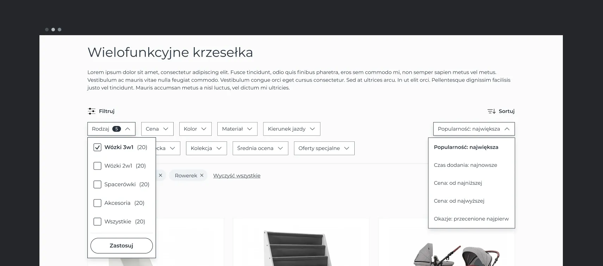

What does a properly designed filter system look like?
2024
Case study based on Kinderkraft filtering project.
Why proper filtering system design is important for good performance of the ecommerce shop?
A well-designed product filtering system is a crucial piece of a successful eCommerce shop. Here are is why:
-
Increases User Engagement: A user-friendly and efficient filtering system can increase user engagement by enabling users to easily find the products they are looking for. This can lead to a better overall shopping experience, higher conversion rates, and repeat business.
-
Saves Time: A well-designed filtering system can save users time and effort by allowing them to quickly and easily narrow down their search results. This can lead to a more efficient shopping experience and reduce frustration, which can also lead to higher conversion rates.
-
Boosts Conversions: A good filtering system helps users find products they are interested in purchasing, which can increase the likelihood of conversions. Users are more likely to buy products if they can easily find them.
-
Improves User Satisfaction: When users can easily find the products they are looking for, they are more likely to be satisfied with the shopping experience. This can lead to positive reviews, repeat business, and increased customer loyalty.
-
Enhances Product Discoverability: A well-designed filtering system can help users discover new products they may not have found otherwise. This can lead to increased sales and can also help businesses identify popular products and trends.
What is not performing in present design?
-
Limited Filter Options: The website have limited filtering options, which can make it challenging for users to find the specific products they are looking for.
-
Poor Filtering Functionality: The filtering system does not provide enough information about the number of products that meet the given criteria. The initial filters disappear depending on the products that are displayed in the category listing, not depending on the category itself. This leads to confusion and frustration for the user who has to remove the filters to show the products and filters category again.
-
Confusing Layout: The filtering options are not consistently displayed on all pages, which can cause confusion for users when navigating the site. When the applied filters doesn't show any products, the information about this result is not well visible.
-
Limited Sorting Options: The website does not offer many sorting options for search results, which can make it challenging for users to find the most relevant products. The website only allows users to sort products by price and name, and not by other settings such as newest products or to the discounted once first.
Key functionalities to be implemented in the filtering system.
-
Filter and sorting changes should be separate entries in the user's browsing history: Selecting sorting and filtering should be a separate action in the browser history and should update url. Thanks to this, the user is able to return to his previous filtering options with the "back" button.
-
Numerical values: All numerical values, such as price or dimensions, should be selected using a slider and it should be possible to manually enter a numerical range.
-
Giving appropriate information: The number of products that meet the given filter condition should be given in brackets. When the number of matches for filtering options aren't shown, users won't know the effect of applying the filters.
-
Live update the product list as filters are applied: When selecting a filtering/sorting action, the products should have a simple loading animation (e.g. a pulsating linear gradient), thanks to which the user knows that he is waiting for a new list of products.
-
Display applied filters in an overview: On the desktop, mark active filters with color and display the number of selected filters from a given category. On mobile, show the number of selected filters in a circle and list them under the name of a given filter.
-
Display filter items in an alphabetical order: Filters in a given category should be arranged alphabetically, it helps user in faster finding searched filter options.
-
Add duplicate of chosen filter on top of filter list: If there are a lot of filters in a given category, the selected ones should be duplicated at the top of the list so that the user has quick access to them.
-
Show number of filtered products: Next to the "Apply filtering" button, the number of products that meet all the conditions. Thanks to this, the user knows what to expect from submitting filters.
Horizontal filtering
Thanks to this solution, the user starts scanning the page from the filtering section, where all filter categories are immediately visible. If there are more filtering options, it is recommended to use vertical filtering.

Vertical filtering
Thanks to more space and the possibility of clearer organization of filters into categories and subcategories, the user is able to scan the filters faster. Additionally, we create a coherent module together with the mobile version of the website.
Filtering in the mobile version
Identical mockups were prepared for both versions of mobile filtering. Currently, the website also uses a similar solution, so its introduction would involve minor changes.